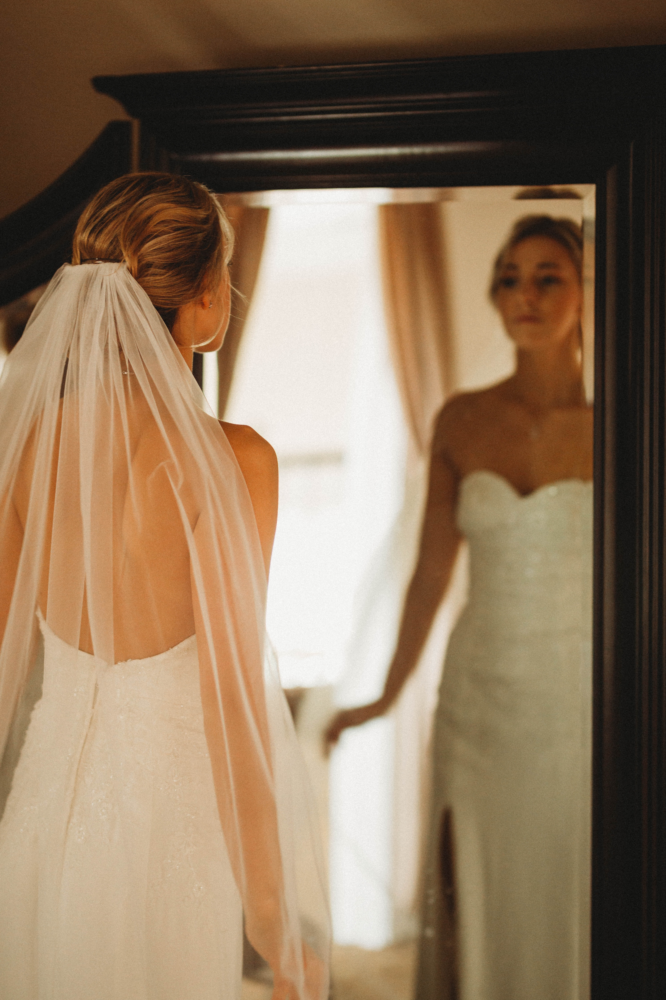
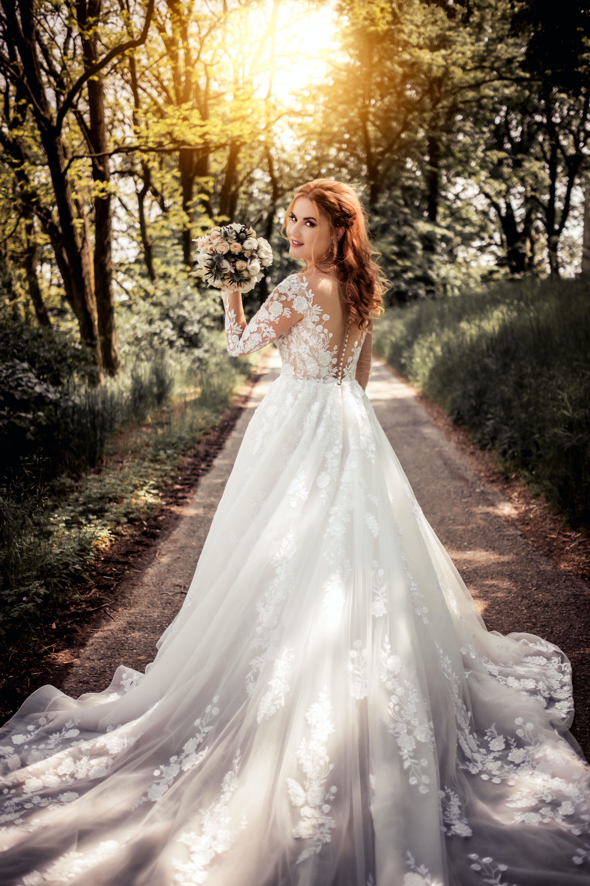
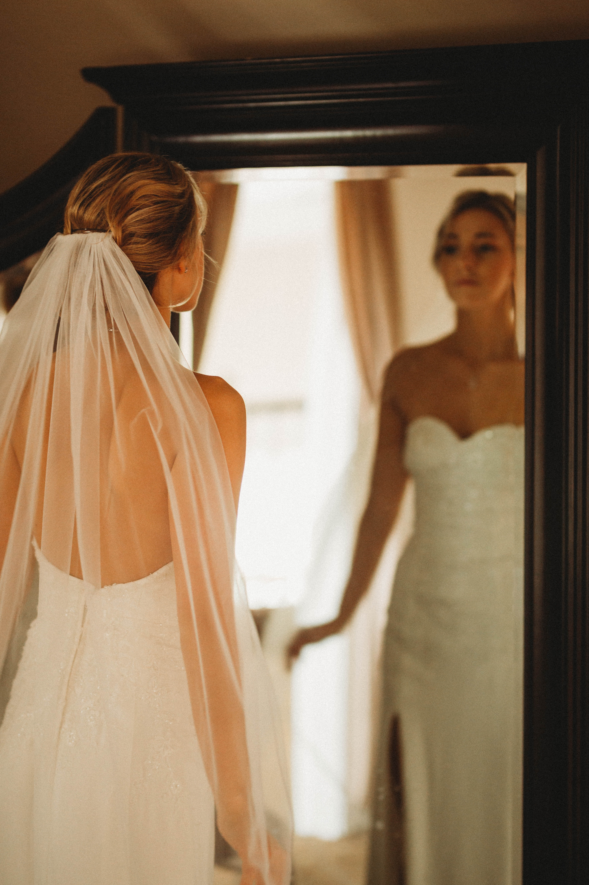
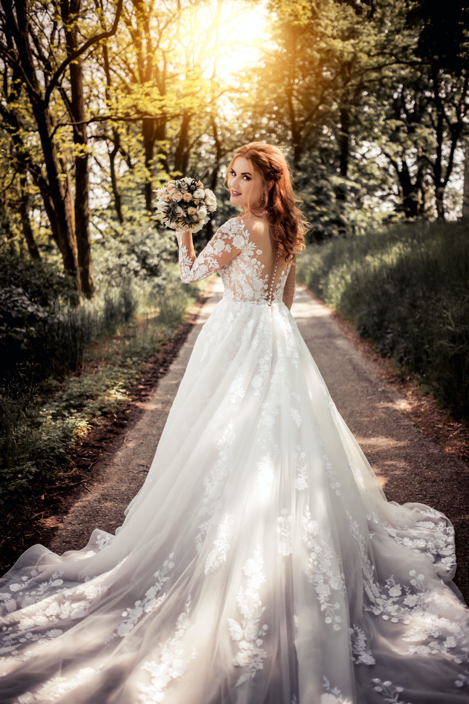

My Story
I started photography at age 12, taking pictures of trees and plants in my backyard. I quickly fell in love with it and decided to invest into a camera. It was the best decision of my life. I used that camera everday and slept with it! Now we are here. If you can dream it, you can achieve it! Through practice, repetition and self-discipline! This is my story!


 


